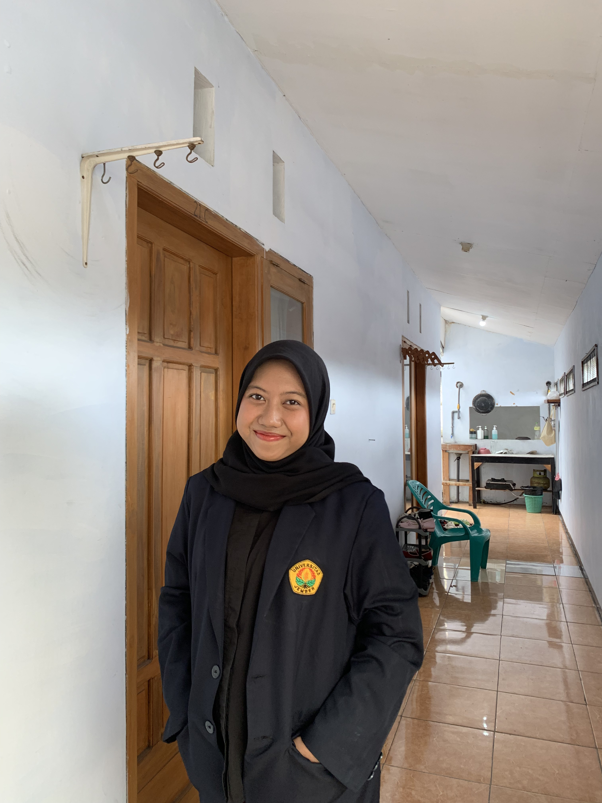
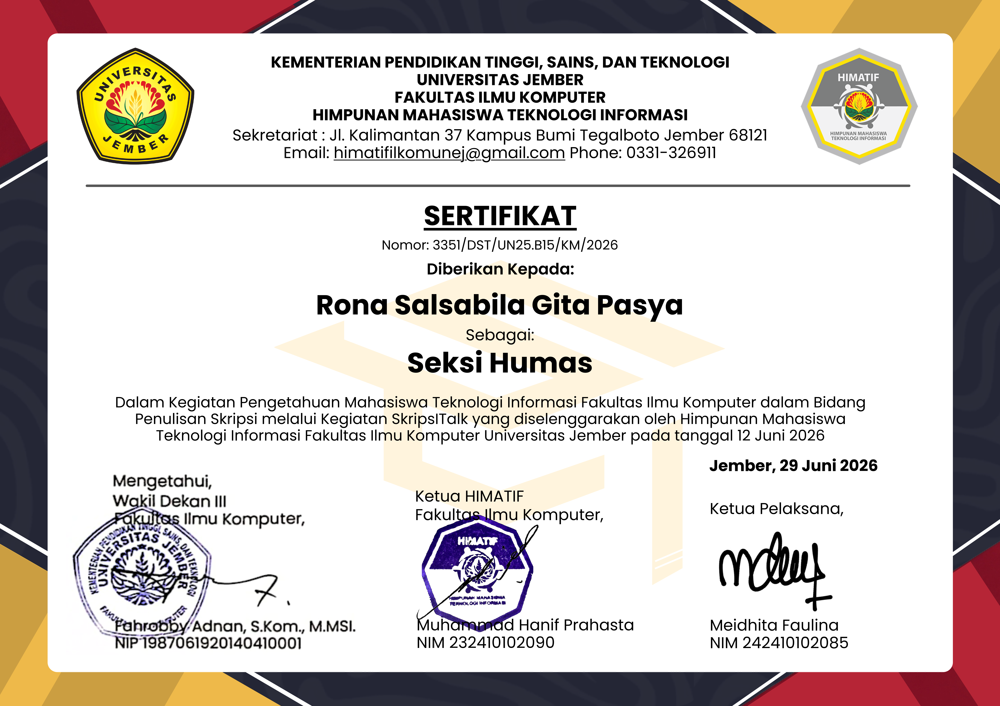
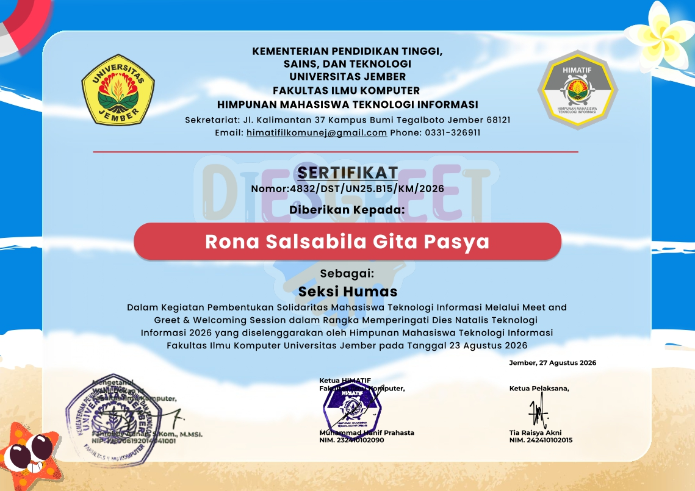
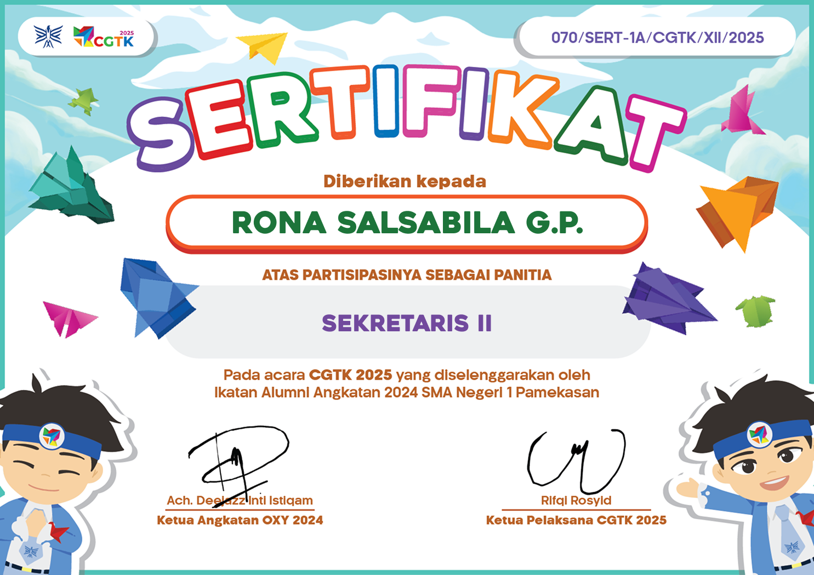

Mahasiswa | Organisasi | Perkuliahan
Halo! Perkenalkan, saya Rona Salsabila Gita Pasya, mahasiswa Teknologi Informasi di Fakultas Ilmu Komputer, Universitas Jember. Saya senang mempelajari hal-hal baru di dunia teknologi, khususnya di bidang pengembangan web. Selain kuliah, saya juga cukup aktif berorganisasi, yang membuat saya terbiasa berdiskusi, bekerja sama dengan banyak orang, dan mencari jalan keluar ketika menghadapi masalah yang tidak sederhana. Bagi saya, belajar tidak cukup hanya lewat teori saya ingin terus mempraktikkannya lewat proyek-proyek nyata. Ke depannya, saya berharap bisa membangun produk digital yang tidak hanya berfungsi dengan baik, tapi juga benar-benar bermanfaat dan nyaman digunakan oleh orang lain.
Email : salsapasya19@gmail.com
Instagram : salsapasyaaa
LinkedIn : Rona Salsabila Gita Pasya
Lokasi : Jember, Indonesia

Anggota Divisi Hubungan Masyarakat

Anggota Divisi Hubungan Masyarakat

Sekretaris II
ENTROPIN adalah sistem distribusi digital berbasis Python dan PostgreSQL yang dirancang untuk memodernisasi rantai pasok UMKM Agroindustri dan petani kecil di Kota/Kabupaten Jember. Proyek ini dikembangkan sebagai penerapan mata kuliah Algoritma dan Pemrograman untuk mengeliminasi pencatatan rantai pasok manual yang masih bergantung pada komunikasi lisan, buku fisik, dan spreadsheet terpisah.
EcoDrive adalah sistem informasi manajemen rental kendaraan listrik (Electric Vehicle) terintegrasi yang dirancang untuk mendigitalisasi dan mengoptimalkan operasional penyewaan kendaraan ramah lingkungan. Ditempatkan sebagai solusi transportasi modern, sistem ini dikembangkan menggunakan bahasa pemrograman C# dengan konsep Object-Oriented Programming (OOP) dan database PostgreSQL.
Ingin bekerja bersama atau bertanya? Silahkan kirim pesan singkat.